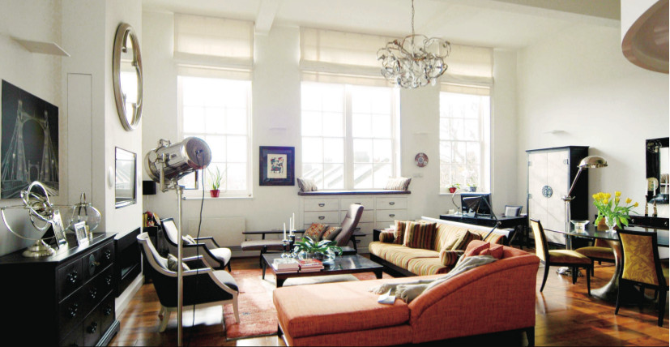
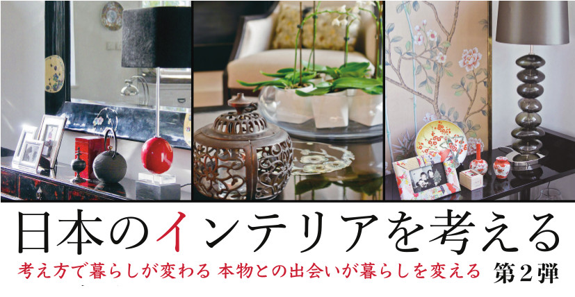
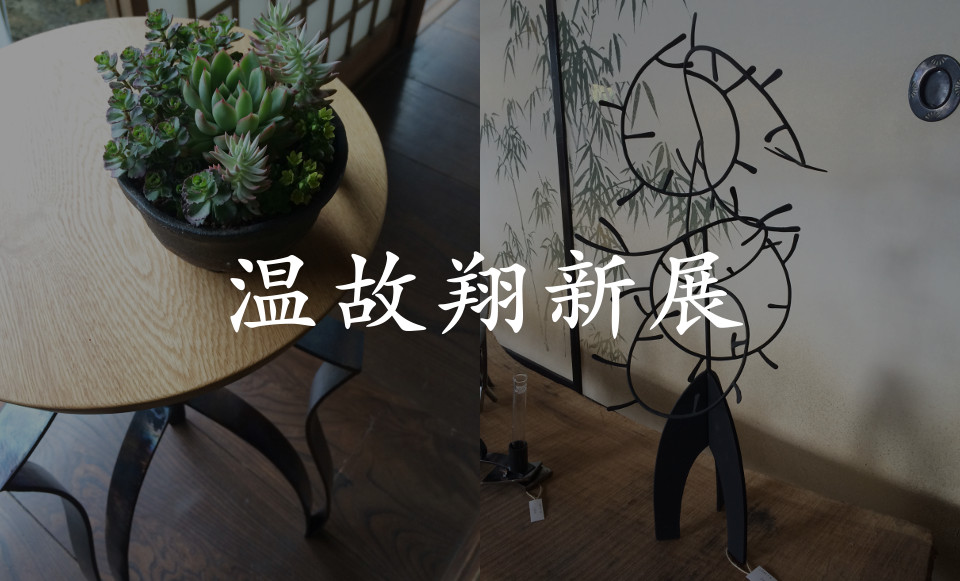
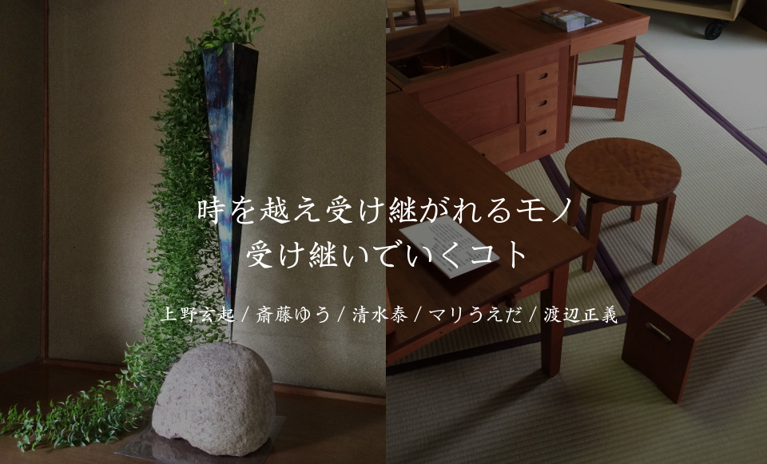
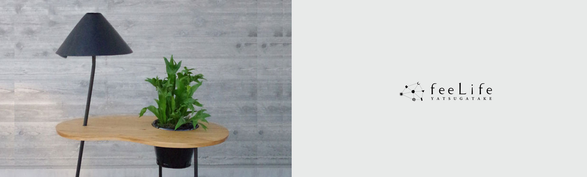
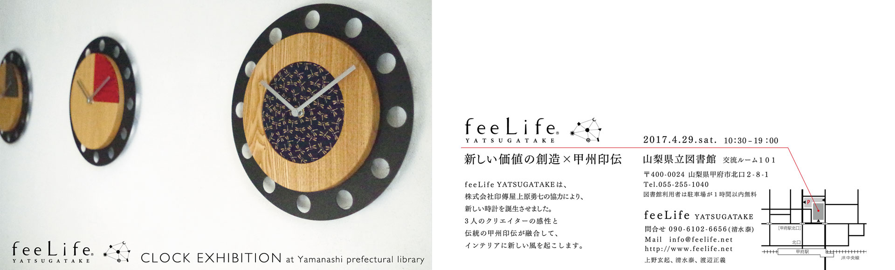
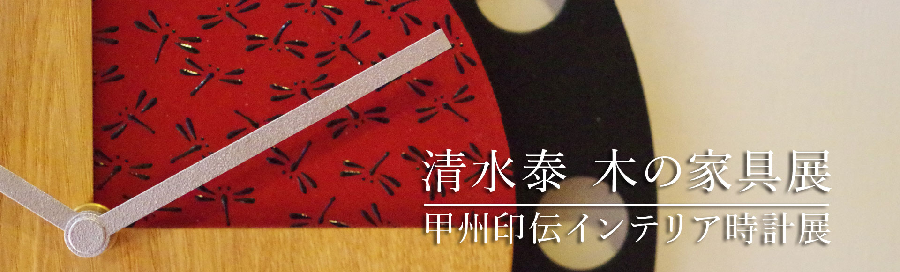
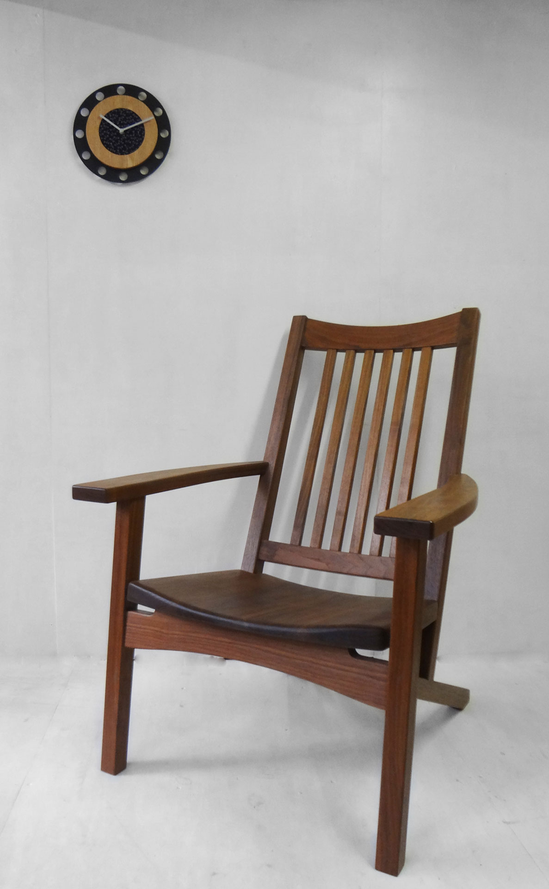
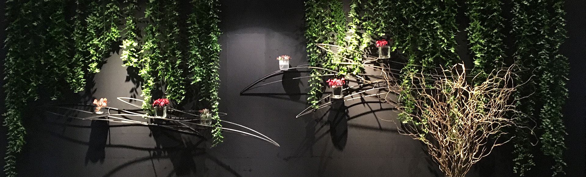

日本のインテリアを考える -第2弾-
「考え方で暮らしが変わる 本物との出会いが暮らしを変える」
をテーマとして、パネルディスカッションがあり、feeLife の上野玄起がパネリストとして登壇します。
パネリスト 澤山乃莉子、上野玄起、保坂浩輝
ミディエーター 中島淳子
会場では印伝モデルの時計の展示もあります。（会場での販売なし）
会期：2017年5月28日（日）開場13:30 / 開演14:00
場所：山梨県防災新館オープンスクエア
山梨県甲府市丸の内1-6-1
会費：大人 1,000円、学生 500円
問合せ：上野玄起 080－5000－6173


温故翔新展
時を越え受け継がれるモノ
受け継いでいくコト
上野玄起 / 斎藤ゆう / 清水泰 / マリうえだ / 渡辺正義
今回で5回目の開催となる「温故翔新展」に、feeLife の3名のクリエイターが参加致します。
旧石川酒造の築約150年の座敷蔵を「ギャラリー登美」として期間限定でオープン。
ジャンルの異なる5人の作家による作品の展示販売、並びにワークショップなどを開催しますので、是非お越し下さい。
会期：2017年5月26日（金）〜 30日（火）11:00 - 17:00
場所：ギャラリー登美（期間限定ギャラリー）
〒400-0104 山梨県甲斐市龍地59
問合せ：090-6102-6656 清水泰まで

平山郁夫シルクロード美術館の常設展示のお知らせ
1999年に八ヶ岳の地に誕生した「平山郁夫シルクロード美術館」において
今年度末までの期間限定にて feeLife YATSUGATAKE の作品を常設展示しております。
購入・予約等のご相談は、直接お電話でお問い合わせ下さい。
会期：2017年3月11日（土）より今年度末までの期間、常設展示。
展示作品：宙SORA、ハンモックテーブル、サイドテーブル「月夜見」
場所：平山郁夫シルクロード美術館
〒408-0031 山梨県北杜市長坂町小荒間2000-6
ホームページ：http://www.silkroad-museum.jp
問合せ：090-6102-6656 清水泰まで

CLOCK EXHIBITION 山梨県立図書館
新しい価値の創造×甲州印伝
feeLife YATSUGATAKEは、株式会社印傳屋 上原勇七の協力により、新しい時計を誕生させました。
3人のクリエイターの感性と伝統の甲州印伝が融合して、インテリアに新しい風を起こします。
会期：2017年4月29日（土）10:30 - 19:00
場所：山梨県立図書館 交流ルーム101
〒400-0024 山梨県甲府市北口2-8-1
ホームページ：https://www.lib.pref.yamanashi.jp
問合せ：090-6102-6656 清水泰まで
CLOCKの詳細は --> 特集ページへ


清水泰 木の家具展＆feeLife YATSUGATAKE
甲州印伝インテリア時計展示会
清水泰 木の家具展において、
甲州印伝のインテリア時計「feeLife clock inden model」の展示会を同時開催致します。
25日と26日の2日間、作家が在廊して時計の展示販売を行います。
会期中を通して時計をご覧頂くことは可能です。
購入・予約等のご相談は、在廊日にお越し頂くか、直接お電話でお問い合わせください。
名称：清水泰 木の家具展＆feeLife YATSUGATAKE甲州印伝インテリア時計展示会
会期：2017年2月18日（土）～26日（日）、20日はお休みです。
9：00～18：30（最終日は17：00終了）
場所：山梨トヨタ 昭和バイパス店 2階ギャラリー
〒409-3852 山梨県中巨摩郡昭和町飯喰1350-1
問合せ：090-6102-6656 清水泰まで
